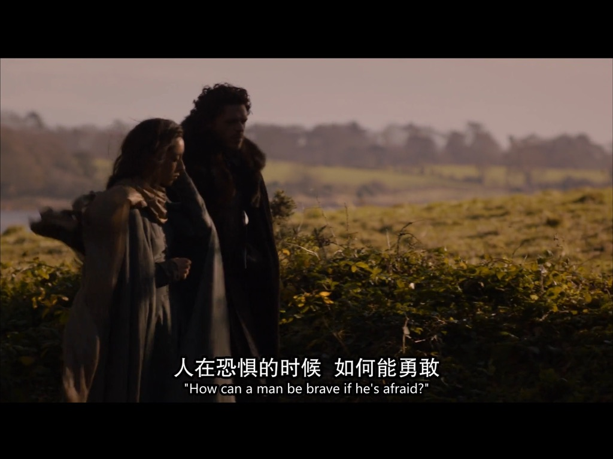
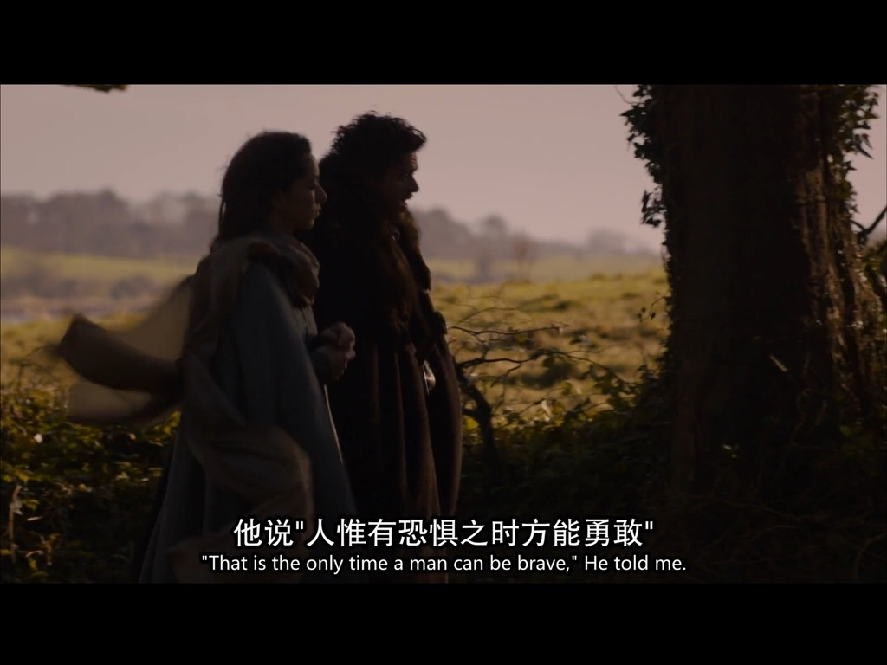

美剧
权力的游戏
Winter is coming!
从2025年 12 月开始看权游，除了精彩的剧情之外，我更佩服里面每个人物的勇气和自信。收录了一些我喜欢的片段和台词。
第一季
小恶魔安慰雪诺
小恶魔：“每个侏儒小子在他爸爸眼里都是一个bastard” ”用bastard来武装你自己，这样就没人伤害得了你“
二丫的狼咬乔弗里
奈德：”你有没有受伤？没有就好。“ ”你们找到我的女儿为什么不通知我，而直接把她带到这里？“
二丫在地堡偷听到父亲要被杀的对话
二丫：“你们知道我是谁吗？我爸爸是国王首相、帝国之手，如果你们还拦着我，我爸爸会把你们的头砍下来挂在树上。” “还不滚开！”
兰尼斯特追杀斯塔克家族
二丫舞蹈老师：“当面对死亡之神时，你要说什么？” “not today.”
小恶魔凭借信誉从艾林谷逃脱
兰尼斯特，有债必还
布兰坐阵临冬城
“布兰，听不喜欢的人讲话，是一名国王要履行的义务。”
第二季
罗柏回忆奈德
“恐惧中如何才能勇敢？”
“只有在恐惧中才能勇敢。”


罗柏说，父亲奈德是世界上最出色的男人；珊莎说，父亲绝不会是叛徒；二丫说，父亲是因为忠诚而死。 奈德在权力的游戏里显得格格不入，看起来，他是第一个输掉游戏的人。可事实是，他的狼崽一个比一个勇敢、坚韧、自信。这是奈德永远的资产，是史塔克家族最亮眼的名片，也是对正义、忠诚美好品质最好的回馈。
瑟后谈统治
统治人民只有一种办法，让他们感到害怕。